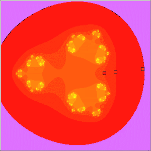
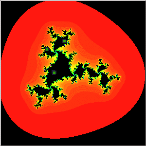
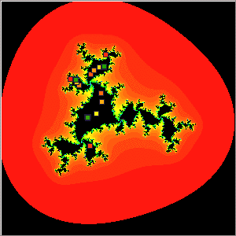
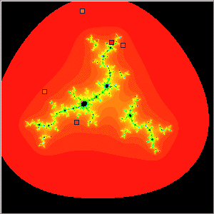
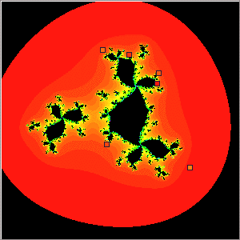
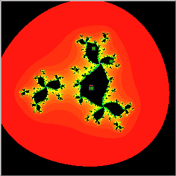

| 2. (e) Here are the iterates of z0 = -1 and z0 = 0
for one c value from each of parts (a) - (d). |
| Iterates of z0 = -1 |
Iterates of z0 = 0 |
| c in neither M(-1) nor M(0). Use the zoom-out
feature to see how quickly the iterates diverge. |
 |
|
| c in both M(-1) and M(0). |
 |
 |
| c in M(-1) but not M(0). |
|
 |
| c in M(0) but not M(-1). |
 |
 |
|
| From these pictures we hypothesize |
If both critical points iterate to infinity, the Julia set is a Cantor set. |
If both critical points remain bounded, the Julia set is connected. |
If one critical point iterates to infinity and the other remains bounded, the
Julia set consists of infinitely many filled-in pieces. |